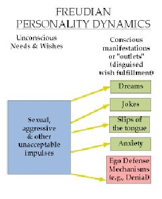

1920 Freud: Religion is an illusion that helps us repress fundamental conflicts at the heart of our psychic life, the expression of our repressed desires in coded ways, originating in an Oedipal complex, with simultaneous love and hate for the Father. God is a form of wish fulfillment, a Father to whom we can express our love and who will forgive us for our hate; that is, our sin. Religion is a false consciousness hiding conflict between amoral pleasure and reality; it is a negotiation between the id and ego; it is a mass neurosis. Consciousness is shaped by repression of desire; civilization is built on coercion and renunciation. Religion is an effect of repression and the inability of humans to confront unavoidable psychic conflict.

1923 The New Geology by Fundamentalist George McCready Price: the creation of the Earth occurred on a Tuesday in 4004 BCE.
1925 The Butler Act bans teaching evolution; hence the Scopes Trial, during which William Jennings Bryan attacks the “oligarchy of scientists.” Bryan is humiliated on the stand and dies a week later.
1920’s School textbook publishers self-censor controversial science to suit Fundamentalism.
1928 Southern and Midwestern Democrats’ reject Al Smith for being a wet, Catholic New Yorker.
1945 Dietrich Bonhoeffer, an advocate of “religionless christianity,” is executed by the Nazis. In the growing secularization after the death of God, religion ceases to play a significant role, with increasing separation of church and state, decreasing numbers of worshippers, and the individualization of religion.
1947 Carl Henry The Uneasy Conscience of the Modern Fundamentalist: reasserts biblical infallibility: God's revelations are the source of all truth, there are moral absolutes; all human thought must begin with presuppositions that cannot be proven but can be rationally defended.
1951 Paul Tillich Reactions to Barth: Barth overlooks the inherent linkage between humans and God: people are threatened by meaninglessness.
1953 Ludwig Wittgenstein, a traditionalist, posits that trust and community ground all forms of life, though he has suspicion of particular beliefs and practices rather than religion in general. He asserts conservative politics and fundamentalist religion as the right path.
1957 Sputnik alarms the US out of its narcotizing religiosity and denial of science.
1961 Flood Geology asserts that Noah’s flood caused geological layers.
1962 Engel v Vitale bans school prayer.
1963 Faced with the possible Soviet supremacy in space, the US updates its education with modern science textbooks.
~~~~~~~~